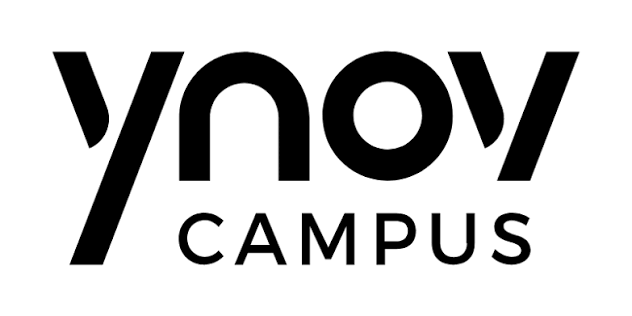

Soutenance d'Architecture Technique - Bachelor 3
Océane · Ilyes · Mehdi · Florian
Mise à l'échelle rapide des locaux et du SI de Biotech Corp.
Intégration de capteurs IoT et flex-office.
Résilience du On-Premise + Élasticité du Cloud
Zero Trust By Design
Liaison chiffrée permanente entre le pfSense local et Azure VPN Gateway.
App Service pour l'évolutivité web, justifié par une analyse TCO rigoureuse.
Synchronisation sécurisée des identités locales vers Entra ID pour un SSO transparent.
• PostgreSQL : Pour l'intégrité transactionnelle (ACID) des réservations.
• MongoDB : Ingère l'énorme volume de logs (Time-Series) des capteurs IoT.
Application stricte de la règle 3-2-1 avec réplication distante chiffrée.
Code sous GitHub, builds automatisés, et déploiements transparents vers Azure.
Sprints de 2 semaines, gestion via GitHub Projects. Traçabilité totale.
Zabbix & Grafana
Gouvernance ITSM
Avez-vous des questions ?